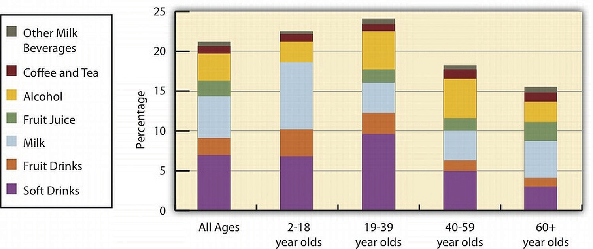

At this point you have learned how critical water is to support human life, how it is distributed and moved in the body, how fluid balance and composition is maintained, and the recommended amount of fluids a person should consume daily. In America you have a choice of thousands of different beverages. Which should you choose to receive the most health benefit and achieve your recommended fluid intake?
Most beverages marketed in the United States have a Nutrition Facts panel and ingredients list, but some, such as coffee (for home consumption), beer, and wine, do not. As with foods, beverages that are nutrient-dense are the better choices, with the exception of plain water, which contains few to no other nutrients. Beverages do not make you full; they satiate your thirst. Therefore, the fewer calories in a beverage the better it is for avoiding weight gain. For an estimate of kilocalories in various beverages see Table 7.9 "Calories in Various Beverages".
Table 7.9 Calories in Various Beverages
| Beverage | Serving Size (oz) | Kilocalories |
|---|---|---|
| Soda | 12.0 | 124–189 |
| Diet soda | 12.0 | 0–7 |
| Bottled sweet tea | 12.0 | 129–143 |
| Brewed tea (unsweetened) | 12.0 | 4 |
| Orange juice (unsweetened) | 12.0 | 157–168 |
| Apple juice (unsweetened) | 12.0 | 169–175 |
| Tomato/vegetable juice | 12.0 | 80 |
| Cranberry juice cocktail | 12.0 | 205 |
| Whole milk | 12.0 | 220 |
| Nonfat milk | 12.0 | 125 |
| Soy milk | 12.0 | 147–191 |
| Coffee, black | 12.0 | 0–4 |
| Coffee, with cream | 12.0 | 39–43 |
| Caffe latte, whole milk | 12.0 | 200 |
| Caffe latte, nonfat milk | 12.0 | 120 |
| Sports drink | 12.0 | 94 |
| Energy drink | 12.0 | 160 |
| Beer | 12.0 | 153 |
| Red wine | 5.0 | 125 |
| White wine | 5.0 | 122 |
| Hard liquor (80 proof) | 1.5 | 96 |
Source: WebMD.com. “Calories in Drinks and Popular Beverages.” Healthy Weight Neighborhood. © 2012 WebMD, LLC. All rights reserved. http://www.webmd.com/community/healthy-weight-8/calorie-chart.
According to the Beverage Marketing Corporation, in the United States in 2010 Americans consumed 29,325 millions of gallons of refreshment beverages including soft drinks, coffee, tea, sports drinks, energy drinksBeverages containing extremely high levels of caffeine, which can augment the effects of the drug., fruit drinks, and bottled water.Beverage Marketing Corporation. “US Liquid Refreshment Beverage Market Increased by 1.2% in 2010, Beverage Marketing Corporation Reports.” Accessed March 17, 2011. http://www.beveragemarketing.com/?section=pressreleases. As in the past, carbonated soft drinks remained the largest category of consumed beverages. In recent decades total caloric consumption has increased in the United States and is largely attributed to increased consumption of snacks and caloric beverages. People between the ages of nineteen and thirty-nine obtain 10 percent of their total energy intake from soft drinks.The Beverage Panel, University of North Carolina, Chapel Hill. “Beverage Intake in the United States.” Accessed October 2, 2011. http://www.cpc.unc.edu/projects/beverage. (See Figure 7.8 "Percentage of Daily Caloric Intake from Beverage Groups".) In all age groups the consumption of total beverages provides, on average, 21 percent of daily caloric intake. This is 7 percent higher than the IOM acceptable caloric intake from beverages. Moreover, the high intakes of soft drinks and sugary beverages displace the intake of more nutrient-dense beverages, such as low-fat milk.
Figure 7.8 Percentage of Daily Caloric Intake from Beverage Groups
Source: University of North Carolina, Chapel Hill. US Beverage Guidance Council. “You Are What You Drink, and We Are Drinking Far Too Many Calories from Beverages!” Accessed November 6, 2012. http://www.cpc.unc.edu/projects/nutrans/policy/beverage/us-beverage-panel/.
Scientific studies have demonstrated that while all beverages are capable of satisfying thirst they do not make you feel full, or satiated. This means that drinking a calorie-containing beverage with a meal only provides more calories, as it won’t be offset by eating less food. The Beverage Panel of the University of North Carolina, Chapel Hill has taken on the challenge of scientifically evaluating the health benefits and risks of beverage groups and providing recommendations for beverage groups (Table 7.10 "Recommendations of the Beverage Panel"). In regards to soft drinks and fruit drinks, The Beverage Panel states that they increase energy intake, are not satiating, and that there is little if any reduction in other foods to compensate for the excess calories. All of these factors contribute to increased energy intake and obesity.Beverage Marketing Corporation. “US Liquid Refreshment Beverage Market Increased by 1.2% in 2010, Beverage Marketing Corporation Reports.” Accessed March 17, 2011. http://www.beveragemarketing.com/?section=pressreleases. The Beverage Panel recommends an even lower intake of calories from beverages than IOM—10 percent or less of total caloric intake.
Table 7.10 Recommendations of the Beverage Panel
| Beverage | Servings per day* |
|---|---|
| Water | ≥ 4 (women), ≥ 6 (men) |
| Unsweetened coffee and tea | ≤ 8 for tea, ≤ 4 for coffee |
| Nonfat and low-fat milk; fortified soy drinks | ≤ 2 |
| Diet beverages with sugar substitutes | ≤ 4 |
| 100 percent fruit juices, whole milk, sports drinks | ≤ 1 |
| Calorie-rich beverages without nutrients | ≤ 1, less if trying to lose weight |
| *One serving is eight ounces. | |
Source: University of North Carolina, Chapel Hill. US Beverage Guidance Council. “Beverage Panel Recommendations and Analysis.” Accessed November 6, 2012. http://www.cpc.unc.edu/projects/nutrans/policy/beverage/us-beverage-panel.
The Beverage Panel recommends that women drink at least 32 ounces and men drink at least 48 ounces of water daily. In 1974, the US federal government enacted The Safe Drinking Water Act with the intention of providing the American public with safe drinking water. This act requires the Environmental Protection Agency (EPA) to set water-quality standards and assure that the 150,000-plus public water systems in the country adhere to the standards. About 15 percent of Americans obtain drinking water from private wells, which are not subject to EPA standards.
For more information on the health risks of and the maintenance of private wells visit the EPA website.
Producing water safe for drinking involves some or all of the following processes: screening out large objects, removing excess calcium carbonate from hard water sources, flocculation, which adds a precipitating agent to remove solid particles, clarification, sedimentation, filtration, and disinfection These processes aim to remove unhealthy substances and produce high-quality, colorless, odorless, good-tasting water (Note 7.43 "Video 7.5").
The Water Treatment Process
(click to see video)Here is a brief video on how drinking water is treated.
Most drinking water is disinfected by the process of chlorination, which involves adding chlorine compounds to the water. Chlorination is cheap and effective at killing bacteria. However, it is less effective at removing protozoa, such as Giardia lamblia. Chlorine-resistant protozoa and viruses are instead removed by extensive filtration methods. In the decades immediately following the implementation of water chlorination and disinfection methods in this country, water-borne illnesses, such as cholera and typhoid fever, essentially disappeared in the United States (Figure 7.9). In fact, the treatment of drinking water is touted as one of the top public-health achievements of the last century.
Figure 7.9

Deadly water-borne illnesses decreased to almost nonexistent levels in the United States after the implementation of water disinfection methods.
Source: Image credit Robert Tauxe. Centers for Disease Control and Prevention. “Drinking Water Week.” Reviewed May 17, 2012. http://www.cdc.gov/features/drinkingwater/graph.html.
Chlorine reaction with inadequately filtered water can result in the formation of potentially harmful substances. Some of these chlorinated compounds, when present at extremely high levels, have been shown to cause cancer in studies conducted in rodents. In addition to many other contaminants, the EPA has set maximum contaminant levels (legal threshold limits) for these chlorinated compounds in water, in order to guard against disease risk. The oversight of public water systems in this country is not perfect and water-borne illnesses are significantly underreported; however, there are far fewer cases of water-borne illnesses than those attributed to food-borne illnesses that have occurred in the recent past.
For a full list of contaminants regulated by the EPA view the tables on the EPA website.
The characteristics of hard water are attributed to higher concentration of calcium and magnesium salts. Hard water is prevalent in the mountain and central time zones and in the Midwestern United States. Hard water is characterized by a calcium carbonate concentration of at least 60 milligrams per liter. Higher concentrations of cations in hard water make it difficult to get soap to lather and clean effectively. Also, the cations precipitate as salts in pipes, dishes, and industrial equipment and can reduce the palatability of drinking water. The average dietary contribution of calcium and magnesium from water ranges between 5 and 20 percent.World Health Organization. “Hardness in Drinking Water.” © 2011. http://www.who.int/water_sanitation_health/dwq/chemicals/hardness.pdf The World Health Organization states that there is no convincing evidence that consumption of hard water adversely affects human health.World Health Organization. “Hardness in Drinking Water.” © 2011. http://www.who.int/water_sanitation_health/dwq/chemicals/hardness.pdf On the contrary, there is some evidence from observational studies that consuming hard water is inversely associated with the incidence of some chronic diseases, including cardiovascular disease and some cancers, although the studies have not been consistent and often have multiple confounding variables.
Soft water is produced primarily by running water through a resin system which exchanges sodium cations for calcium and magnesium ions. Treating exceptionally hard waters can significantly increase the sodium concentration in drinking water. The practical benefits of soft water are that soap scum no longer makes dishes and bathrooms dingy, clothes are softer, and there is less of a toll on household and industrial equipment. On the other hand, the increased sodium in soft water can make it taste worse and potentially exacerbate health problems such as hypertension, especially in salt-sensitive populations. Soft water can be treated by a process called “reverse osmosis,” which removes the sodium ions. These filtration systems can be purchased for home use, although their cost is a bit high.
Bottled water is not regulated by the EPA but by FDA. For bottled water, the FDA adheres to the same quality standards as those set by the EPA for tap water. Therefore, the contaminant levels set by the EPA for tap water are not different for bottled water; although there is much less testing, monitoring, and oversight of bottled water in comparison to tap water. Similar to tap water the source and treatment of bottled water determines its taste and quality. Depending on where you live, tap water can be a dietary source of minerals (such as calcium and magnesium), but remember that food rather than water serves as a more prominent dietary source of these minerals.
Distilled and purified bottled waters have had all minerals removed during processing, but not all bottled waters have had minerals removed. Mineral waters, sparkling waters, and Artesian waters are examples of bottled waters that contain some minerals, but they are more expensive. Tap water in the United States costs, on average, much less than one cent per gallon, while bottled water is upwards of three dollars per gallon. Moreover, bottled water uses more resources and produces more waste in comparison to tap water. Iowa State University reports that in the United States alone, the making of plastic bottles for bottled water consumption uses more than 1.5 million barrels of oil every year, which is more than the fuel required for one hundred thousand cars.Iowa State University. “Bottled Water, Know the Facts.” Accessed October 2, 2011. http://www.extension.iastate.edu/publications/pm1813.pdf.
See Table 7.11 "Bottled Water Labels and Corresponding Meanings" for a list of the definitions of different types of marketed bottled waters. Soda, seltzer, and tonic waters are not considered bottled waters and are classified as soft drinks by the FDA. Recently, flavored and nutrient-added water beverages have arrived on the market and are regulated by the FDA in accordance with regulation of bottled waters.
Table 7.11 Bottled Water Labels and Corresponding Meanings
| Label | Meaning |
|---|---|
| Artesian | Water from a confined aquifer |
| Mineral | Water containing > 250 ppm total dissolved solids; from protected underground water source (no minerals are added) |
| Purified | Water treated by distillation, deionization, reverse osmosis or other process* |
| Sterile | Meets the definition of purified water* |
| Spring | Water derived from an underground formation from which water flows naturally to the surface of the earth |
| Well | Water from a hole-bored, drilled, or otherwise constructed in the ground which taps the water of an aquifer |
| Sparkling | Water that replaces (by treatment) natural (contained within source) carbon dioxide levels |
| *Meets the definition of “purified water” in the United States. Pharmacopeia, 23d Revision, Jan. 1, 1995. It may also be called “demineralized water” or “deionized water.” | |
| ppm = parts per million | |
Source: US Food and Drug Administration. “Bottled Water Regulation and the FDA.” Ask the Regulators. February/March 2002. http://www.fda.gov/Food/FoodSafety/Product-SpecificInformation/BottledWaterCarbonatedSoftDrinks/ucm077079.htm.
Bisphenol A (BPA) is a chemical added to plastics, mostly polycarbonate (which is used to make bottled water containers), and to epoxy resins (which are used to line metal-based containers, such as those used for packaging infant formulas). It has been utilized for these purposes and many others since the 1940s. Most studies evaluating toxicity of BPA demonstrate it does not cause adverse health effects to humans at the levels it exists in for beverage and food containers. However, in January of 2010 the FDA issued an update on BPA uses in the food industry.US Food and Drug Administration. “Update on Bisphenol A (BPA) for Use in Food Contact Applications.” Last updated March 30, 2012. http://www.fda.gov/NewsEvents/PublicHealthFocus/ucm197739.htm. This update reports that the FDA, along with the IOM and the National Toxicology Program, “have some concern about the potential effects of BPA on the brain, behavior, and prostate gland in fetuses, infants, and young children.”US Food and Drug Administration. “Update on Bisphenol A (BPA) for Use in Food Contact Applications.” Last updated March 30, 2012. To address these potential health concerns studies are currently being conducted to further evaluate the risk of adverse health effects associated with exposure to low levels of BPA. In the interim the FDA is taking steps to reduce human exposure to BPA. Many bottled water companies have switched to “BPA-free” plastic containers.
Make a more sustainable choice and enjoy a glass of water from the tap right in your home.
Save some money, reduce your exposure to BPA, and be more sustainable in your water consumption by drinking more tap water than bottled water. If your tap water has a bad smell or taste, purchase a home water filter. If you still prefer bottled water, do not buy purified water. Also, buy larger volumes of bottled water with less packaging and use a reusable bottle for drinking, or better yet try a water glass from the kitchen cupboard. If you have questions on the safety of your tap water, visit the website of the municipality in which you live. They are required by law to provide this information to the public.
Bottled Water versus Tap Water
(click to see video)Use this video to provoke discussion on tap water versus bottled water.